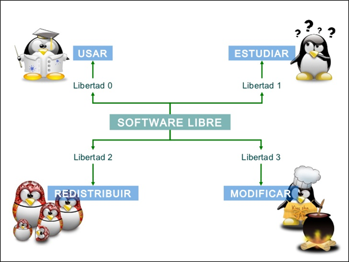

4 Libertades de Software Libre
Un programa es software libre si los usuarios tienen las cuatro libertades esenciales:
- La libertad de ejecutar el programa como se desee, con cualquier propósito (libertad 0).
- La libertad de estudiar cómo funciona el programa, y cambiarlo para que haga lo que usted quiera (libertad 1). El acceso al código fuente es una condición necesaria para ello.
- La libertad de redistribuir copias para ayudar a otros (libertad 2).
- La libertad de distribuir copias de sus versiones modificadas a terceros (libertad 3). Esto le permite ofrecer a toda la comunidad la oportunidad de beneficiarse de las modificaciones. El acceso al código fuente es una condición necesaria para ello.
Un programa es software libre si otorga a los usuarios todas estas libertades de manera adecuada. De lo contrario no es libre. Existen diversos esquemas de distribución que no son libres, y si bien podemos distinguirlos en base a cuánto les falta para llegar a ser libres, nosotros los consideramos contrarios a la ética a todos por igual.
